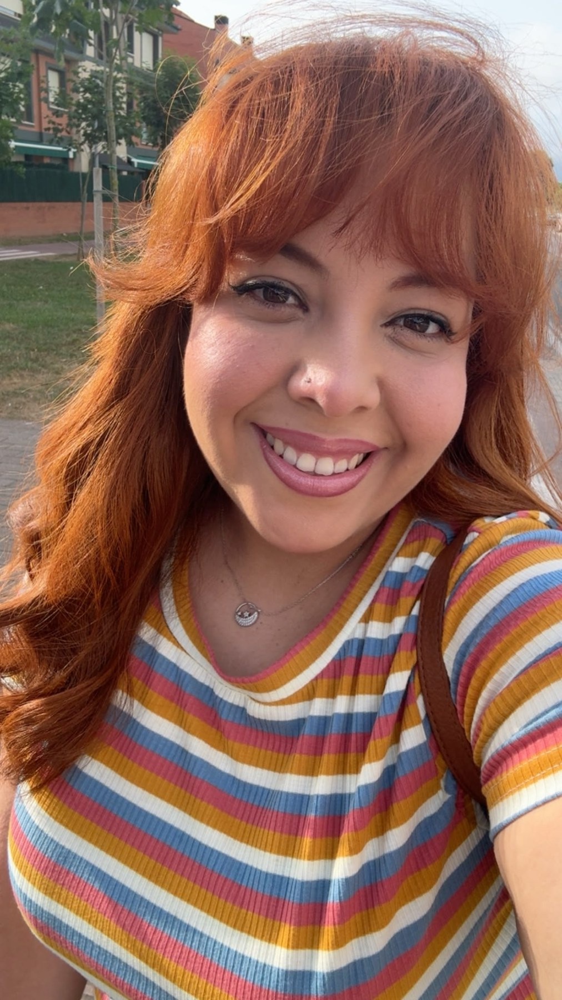
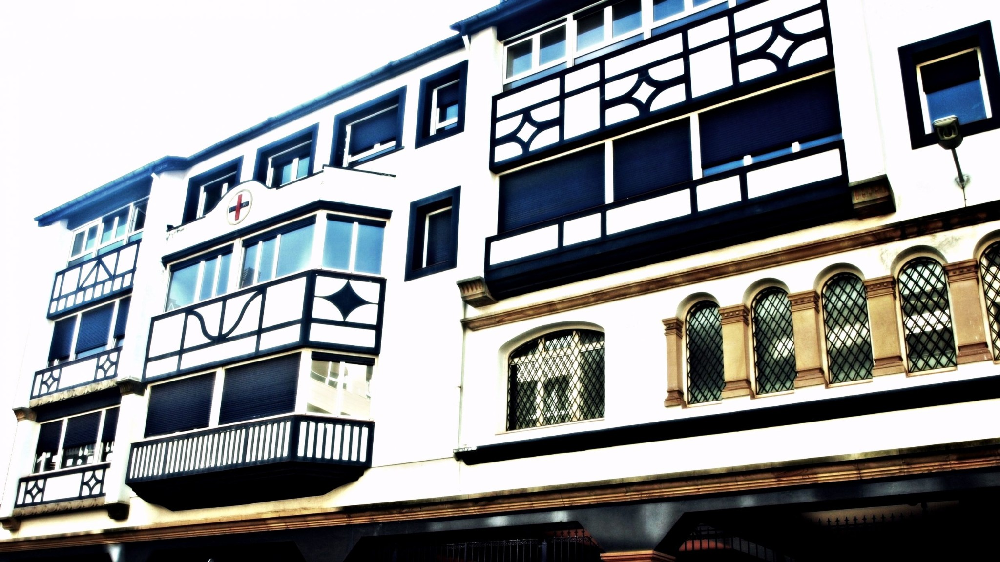
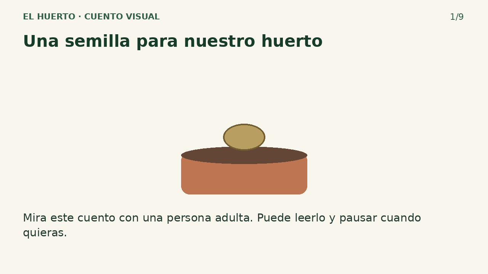
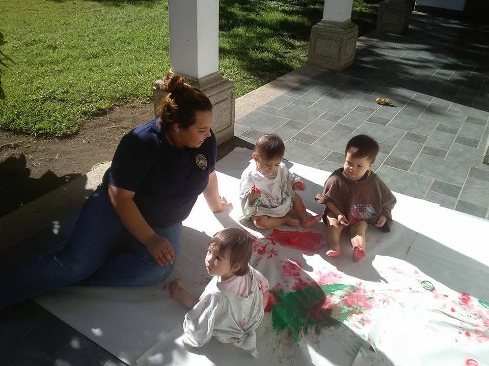

Hola, soy
Ale.
Aprender, acompañar
y crecer juntos.
Más de seis años de experiencia como maestra de Educación Infantil en Guatemala. Hoy, desde Bizkaia, culmino elGrado en Educación Infantil en UNIR.

Una mirada cercanaa la infancia.Guatemala ↔ Bizkaia
La infancia, en el centro
de mi recorrido.
Mi trayectoria reúne la experiencia en aulas de Educación Infantil en Guatemala y el trabajo de atención a personas y familias en Bizkaia. Hoy continúo mi formación universitaria y reúno aquí una selección de mis trabajos y propuestas educativas.
Este espacio conecta lo que estudio con lo que me interesa explorar: la vida de los centros, la relación con las familias y las posibilidades de los recursos digitales para aprender.
Mi formación y experiencia ↗Ideas que toman forma.

Mirar la escuela desde su entorno
Análisis del colegio Santísima Trinidad Ikastetxea, su organización y su comunidad educativa.
Leer el proyecto ↗grandes comienzos.EL DESAYUNO EN LA INFANCIA
El desayuno en la infancia
Un material informativo dirigido a las familias, presentado como un folleto visual.
Explorar el material ↗
Una semilla para nuestro huerto
Una experiencia de aula invertida con un cuento visual y actividades interactivas.
Descubrir la experiencia ↗Instrumentos musicales
Una actividad audiovisual sobre creación de instrumentos y aprendizaje cooperativo.
Ver el vídeo ↗
La experiencia
también enseña.
Momentos de juego, lectura y encuentro cultural que hoy miro desde mi formación y la investigación educativa.
Explorar mis experiencias ↗